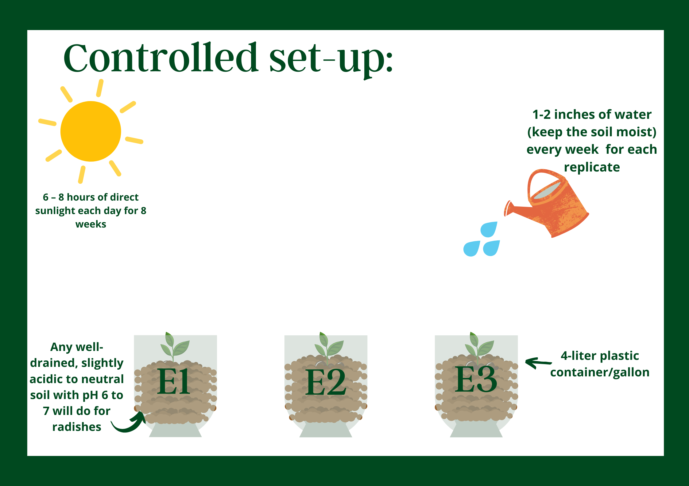

SIP Research Proposal and SIP Setup Documentation
BACKGROUND AND SIGNIFICANCE OF THE STUDY
 The Mindanao Advocates Against AIDS, Inc (MAAAI) exists in order to fight against one of the well-known issues in Mindanao; STI-HIV/AIDS. Its advocacy is to control the cases of AIDS hence this institution aims to educate Bisayas/Davaoeneos about AIDS; bring upon knowledge on how to prevent this, especially for minors, as this is a common issue present in the community. The MAAAI provides programs and services such as HIV Testing services (HIV Counseling & Testing); STI (Sexually Transmitted Infections) management and treatment; Lectures on Teenage Pregnancy, STI/HIV-AIDS, SOGIE (Sexual Orientation, Gender Identity & Expression), Community-based Screening (CBS); HIV Treatment; and, Young People Training on HIV/SOGIE/Stigma & Discrimination. The institution has HIV Testing services, an STI Laboratory, and HIV Treatment as part of our physical facilities. The primary beneficiaries of this institution are mainly education and prevention of AIDS which can where in this way we can establish a healthier community. In our Science Investigatory Project, we are to study using compost (banana and carrot compost) as fertilizers to Radish seedlings and how this can affect the plant growth (height). Finding out what natural fertilizer is the best between banana and carrot peel fertilizer to develop efficient plant growth as nutrients from these fertilizers (nitrogen, phosphorus and magnesium) help in achieving efficient plant growth of radishes. The importance of this study in relation to our project in helping out MAAAI is that educating about the simple matter of having a healthy lifestyle through effective and low budget planting and composting (fertilizer) as this can help people living with AIDS to avoid complications of the disease and can help with their immune system through the nutrients and vitamins they receive from what they eat daily.
The Mindanao Advocates Against AIDS, Inc (MAAAI) exists in order to fight against one of the well-known issues in Mindanao; STI-HIV/AIDS. Its advocacy is to control the cases of AIDS hence this institution aims to educate Bisayas/Davaoeneos about AIDS; bring upon knowledge on how to prevent this, especially for minors, as this is a common issue present in the community. The MAAAI provides programs and services such as HIV Testing services (HIV Counseling & Testing); STI (Sexually Transmitted Infections) management and treatment; Lectures on Teenage Pregnancy, STI/HIV-AIDS, SOGIE (Sexual Orientation, Gender Identity & Expression), Community-based Screening (CBS); HIV Treatment; and, Young People Training on HIV/SOGIE/Stigma & Discrimination. The institution has HIV Testing services, an STI Laboratory, and HIV Treatment as part of our physical facilities. The primary beneficiaries of this institution are mainly education and prevention of AIDS which can where in this way we can establish a healthier community. In our Science Investigatory Project, we are to study using compost (banana and carrot compost) as fertilizers to Radish seedlings and how this can affect the plant growth (height). Finding out what natural fertilizer is the best between banana and carrot peel fertilizer to develop efficient plant growth as nutrients from these fertilizers (nitrogen, phosphorus and magnesium) help in achieving efficient plant growth of radishes. The importance of this study in relation to our project in helping out MAAAI is that educating about the simple matter of having a healthy lifestyle through effective and low budget planting and composting (fertilizer) as this can help people living with AIDS to avoid complications of the disease and can help with their immune system through the nutrients and vitamins they receive from what they eat daily. STATEMENT OF THE PROBLEM
Which between 5% of carrot peels, 10% of carrot peels, 5% of banana peels and 10% of banana peels will have a better effect on height growth of radish sprouts? sprouts?HYPOTHESIS
If I use 10% of banana peels rather than 5%/10% of carrot peels or 5% of banana peels then the radish sprouts will be taller than the other plants.
REVIEW OF RELATED LITERATURE
 (1) Compost is created by combining food leftovers and yard debris, such as raked leaves and undergoing the process of decomposition. The process of composting includes chopping off food waste (in our case, we will be using banana peels and carrot peels; banana peels on setup A, and carrot peels on setup B) and with compost (soil), we will mix them in a container with holes on the bottom of the container for air flow, water the mix, then leave it for 2-3 weeks to decompose (Note: it is necessary to implement proper monitoring of the compost mix.)
(1) Compost is created by combining food leftovers and yard debris, such as raked leaves and undergoing the process of decomposition. The process of composting includes chopping off food waste (in our case, we will be using banana peels and carrot peels; banana peels on setup A, and carrot peels on setup B) and with compost (soil), we will mix them in a container with holes on the bottom of the container for air flow, water the mix, then leave it for 2-3 weeks to decompose (Note: it is necessary to implement proper monitoring of the compost mix.)
The value of compost to plants is that it's a natural fertilizer and doesn’t require the use of chemical fertilizers. Compost enhances soil structure, offers a variety of nutrients for plants, and introduces helpful bacteria into the soil. Whether you compost in your garden, it minimizes your garbage and helps fight climate change in a modest manner.

(2) The plant that our group will focus on is Raphanus sativus L or well known as radish (seedlings). Radishes like plenty of phosphorus as this helps in several aspects of plant growth, naming flowering, root development, and water content, and energy transfer through plant structure. Potassium is also vital in the success of growing a radish since this nurtures the growth of roots. Radish roots absorb phosphorus in the form of orthophosphate, but can also absorb certain forms of organic phosphorus. Phosphorus and potassium moves to the root surface through diffusion. The healthy levels of these nutrients are needed by the plant is 25 to 50 ppm (parts per million) of phosphorus and 40 to 80 ppm (parts per million) of Potassium.
![]()
(3) Carrot peel and Banana peel compost. It is stated that Bananas and Carrots contain nutrients that houseplants love. When these skins undergo decomposition, banana peels and carrot peels release potassium and small amounts of nitrogen, phosphorus and magnesium. And as stated above, radishes are fond of soil that is rich in potassium as this can help their growth in many ways. As stated from the first item, the process of composting includes chopping off food waste (in our case, we will be using banana peels and carrot peels; banana peels on setup A, and carrot peels on setup B) and with compost (soil), we will mix them in a container with holes on the bottom of the container for air flow, water the mix, then leave it for 2-3 weeks to decompose (Note: it is necessary to implement proper monitoring of the compost mix.)
 (4) The benefits the compost could provide to the plant is that it ensures that the plant has access to every essential nutrient it needs to be able to grow properly and healthily. Decreasing the chances that the plant might have stunted growth, brown spots on leaves, leaf necrosis, withered or stunted leaves, leaf tip burn, blossom end rot in fruit and finally leaf chlorosis. Ensuring that the plant is able to grow at its healthiest providing us with the best results the plan is able to offer. This occurs through the process of mineralization. Mineralization is the conversion of a nutrient from the organic (i.e. bound to carbon and hydrogen) form to the inorganic form. The process occurs when organic materials, such as soil organic matter, manure, plant residue, or biosolids, are decomposed by soil microorganisms.
(4) The benefits the compost could provide to the plant is that it ensures that the plant has access to every essential nutrient it needs to be able to grow properly and healthily. Decreasing the chances that the plant might have stunted growth, brown spots on leaves, leaf necrosis, withered or stunted leaves, leaf tip burn, blossom end rot in fruit and finally leaf chlorosis. Ensuring that the plant is able to grow at its healthiest providing us with the best results the plan is able to offer. This occurs through the process of mineralization. Mineralization is the conversion of a nutrient from the organic (i.e. bound to carbon and hydrogen) form to the inorganic form. The process occurs when organic materials, such as soil organic matter, manure, plant residue, or biosolids, are decomposed by soil microorganisms.

(5) One effective way to apply the compost to the radish and soil environment is by applying the dark finished compost and sprinkle compost on top or mix it into your flower and vegetable beds, gently rake compost into tree beds, blend it with potting soil to revitalize indoor plants, or spread it on top of the soil on your lawn as a soil amendment. To specify, When establishing new turf, incorporate up to 3 inches of compost into the existing soil base. If possible, till to a depth of 5–8 inches before seeding. Otherwise, seed directly over the compost. Spread 1–2 inches of compost on top of perennial and annual beds in the early spring or fall to prevent weeds from establishing and to make plants more drought-resistant. The compost should be administered to the plant one time only, at least 3 days after planting the seedling.
(6.1) Plant nutrients such as vitamin C, Beta-carotene, and Niacin are delivered by both carrot and banana compost.
Carrot fertilizer is rich in concentrated amounts of vitamin C ,beta-carotene and niacin which helps the plant protect itself from the stresses that the environment will bring.
The functions of each nutrients mentioned are the following:
Vitamin c controls the division, elongation, and differentiation of cells, as well as programmed cell death. As well as to handle and deal with the stresses that may come from the environment such as a drought, vitamin c is produced by the plant to act as an antioxidant and coenzyme in metabolic reactions that help protect the plant.
beta-carotene increases both the light-harvesting and photoprotective capacity of the photosystems allowing them to protect themselves from excessive amounts of light and superoxide radicals which could harm the plant.
niacin are suggested to be stress signals in plant cells and what they do is that both Nicotinamide and nicotinic acid protect against plant cell leakage and DNA damage inside of the plant as well as both Nicotinamide and nicotinic being able to increase acid aconitase and fumarase activities that helps the plant protect itself much more.
One of the mechanisms for nutrient metabolism is photosynthesis. This helps the plants to efficiently transfer other essential nutrients and water between plant cells, and regulates enzyme activity involving carbon and nitrogen metabolism in the plant.
METHODOLOGY
A. VARIABLES
Independent Variable
The presence and amount of carrot peels and banana peels as fertilizer for radish sprouts.
The height of the radish sprouts.
Constant or Controlled Variables
Type of pot: 4-liter plastic container/gallon
Type of soil: Any well-drained, slightly acidic to neutral soil with pH 6 to 7 will do for radishes
Number of replicates: 3 replicates on both set-up
Amount of sunlight: 6 – 8 hours of direct sunlight
Amount of water: 1-2 inches of water (keep the soil moist)
Type of plant: radish sprouts
B. TREATMENTS/SET-UP
CONTROLLED SET-UP

The controlled setup consists of the basics on how to take care of a plant. Radish seedlings are planted in a well-drained, slightly acidic to neutral soil with pH 6 to 7 using a 4-liter plastic container/gallon for each plant/replicate. It is to be exposed to sunlight 6 – 8 hours of direct sunlight each day for 8 weeks. The plant is also to be watered 1-2 inches (keep the soil moist) every week for each replicate.
EXPERIMENTAL SET-UP A
The experimental setup A consists of the basics on how to take care of a plant plus applying 5% of banana fertilizer. Radish seedlings are planted in a well-drained, slightly acidic to neutral soil with pH 6 to 7 using a 4-liter plastic container/gallon for each plant/replicate. It is to be exposed to sunlight 6 – 8 hours of direct sunlight each day for 8 weeks. The plant is also to be watered 1-2 inches (keep the soil moist) every week for each replicate.
Fertilize the soil by sprinkling 5% of compost (100 grams) on the bed of the soil three days after planting the radish seedlings using compost with decomposed chopped banana bits (to be prepared 2-3 weeks before the implementation of the study by the process of composting includes chopping off banana peels and with compost (soil), we will mix them in a container with holes on the bottom of the container for air flow, water the mix, then leave it for 2-3 weeks to decompose (Note: it is necessary to implement proper monitoring of the compost mix.)
EXPERIMENTAL SET-UP B
The experimental setup B consists of the basics on how to take care of a plant plus applying 10% of banana fertilizer. Radish seedlings are planted in a well-drained, slightly acidic to neutral soil with pH 6 to 7 using a 4-liter plastic container/gallon for each plant/replicate. It is to be exposed to sunlight 6 – 8 hours of direct sunlight each day for 8 weeks. The plant is also to be watered 1-2 inches (keep the soil moist) every week for each replicate.
Fertilize the soil by sprinkling 10% of compost (200 grams) three days after planting the radish seedlings using compost with decomposed chopped banana bits (to be prepared 2-3 weeks before the implementation of the study by the process of composting includes chopping off banana peels and with compost (soil), we will mix them in a container with holes on the bottom of the container for air flow, water the mix, then leave it for 2-3 weeks to decompose (Note: it is necessary to implement proper monitoring of the compost mix.)
EXPERIMENTAL SET-UP C
The experimental setup A consists of the basics on how to take care of a plant plus applying 5% of carrot fertilizer. Radish seedlings are planted in a well-drained, slightly acidic to neutral soil with pH 6 to 7 using a 4-liter plastic container/gallon for each plant/replicate. It is to be exposed to sunlight 6 – 8 hours of direct sunlight each day for 8 weeks. The plant is also to be watered 1-2 inches (keep the soil moist) every week for each replicate.
Fertilize the soil by sprinkling 5% of compost (100 grams) three days after planting the radish seedlings using compost with decomposed chopped carrot peel bits (to be prepared 2-3 weeks before the implementation of the study by the process of composting includes chopping off carrot peels and with compost (soil), we will mix them in a container with holes on the bottom of the container for air flow, water the mix, then leave it for 2-3 weeks to decompose (Note: it is necessary to implement proper monitoring of the compost mix.)
EXPERIMENTAL SET-UP D
The experimental setup A consists of the basics on how to take care of a plant plus applying 10% of carrot fertilizer. Radish seedlings are planted in a well-drained, slightly acidic to neutral soil with pH 6 to 7 using a 4-liter plastic container/gallon for each plant/replicate. It is to be exposed to sunlight 6 – 8 hours of direct sunlight each day for 8 weeks. The plant is also to be watered 1-2 inches (keep the soil moist) every week for each replicate.
Fertilize the soil by sprinkling 10% of compost (200 grams) three days after planting the radish seedlings using compost with decomposed chopped carrot peel bits (to be prepared 2-3 weeks before the implementation of the study by the process of composting includes chopping off carrot peels and with compost (soil), we will mix them in a container with holes on the bottom of the container for air flow, water the mix, then leave it for 2-3 weeks to decompose (Note: it is necessary to implement proper monitoring of the compost mix.)
C.EXPERIMENTAL DATA TO BE MEASURED OR OBSERVED
| Experimental Measurement of Observation | Description of Measurement or Observation | Significance of Observation |
|---|---|---|
| Measurement of the plants’ height | The height of the plants will be measured in centimeters every week. | To see the measurement of the plants’ growth. |
| The number of leaves | Number of leaves will be counted every week. | To see the rate of the plant's growth. |
| Color of the leaves | The color of the leaves will be checked and noted every week. | To see how healthy the color of the plant is. |
D. MATERIALS AND EQUIPMENT NEEDED
| Materials and Equipment | Quantity Needed | Description of Use | Specifications or Criteria for Materials and Equipment |
|---|---|---|---|
| Shovel | 1pc | For mixing the compost with the soil | n/a |
| Radish Sprout seedlings | 15seedlings | For testing | two-week old seedling |
| carrot peels | 10 kg | For composting | Bananas from “Lakatan” or Musa acuminata (AA Group) variety |
| 4 liter plastic gallons (recycled) | 15 | Plant pot | n/a |
| measuring tape | 1 | For measuring | n/a |
| garden soil | 40kg | For planting and composting | well-drained,slightly acidic to neutral soil with pH 6 to 7 |
E.PROCEDURES FOR TESTING AND GATHERING/OBTAINING DATA
| Section | Step-by-Step Procedure |
|---|---|
| Producing or Sourcing the Compost Material | First, we will prepare the materials for the experiment, naming 1 shovel, 15 2-week old radish seedlings, 10 kg of orange carrot (Daucus carota subsp. sativus) and banana peels (Bananas from “Lakatan” or Musa acuminata (AA Group) variety), 15 4-liter plastic gallons, and one measuring tape. Then, we are to prepare the compost materials/fertilizers starting off with the banana peels by chopping off banana peels and carrot peels; banana peels on setups A and B, and carrot peels on setups C and D) and with compost (soil), we will mix them in a container with holes on the bottom of the container for air flow, water the mix, then leave it for 2-3 weeks to decompose (Note: it is necessary to implement proper monitoring of the compost mix.) |
| Sourcing and Preparing the Test Plants and Plant Soil | Then, we must prepare the test plants as well as the plant soil. Put 2 kilograms of soil in each 4 liter plastic gallon and plant the Radish seedlings 2 inches deep in the garden soil. |
| Making observations and/or measurements about the Compost | The factors to be observed during composting are Banana peels and Carrot peels being broken down. The factors to be observed after composting are the soil being less bulky and banana peels and carrot peels being fully broken down. | Dosage and Frequency of Compost Application to the Test Plants | Add 100 grams of banana compost to test plant setup A, add 200 grams of banana compost to test plant B, add 100 grams of carrot peel compost to test plant setup C, and add 200 grams of banana compost to test plant D all after three days of planting the seedling. | Making observations and/or measurements about the Test Plants | The measurements to be made after the experiment would be the height of the plant, number of leaves, and the color of the leaves. The observations will be done 3 days after the 4 weeks of planting period. |
VISUAL DOCUMENTATION OF INITIAL SIP SET-UP
Bibliography
Petruzzello, Melissa.(2021, Jan. 22)compost. Encyclopedia Britannica.
https://www.britannica.com/topic/compost
Andrea Beck.(2022, May 13) How to Make Compost to Feed Your Plants and Reduce Waste. Better Homes & Gardens.
https://www.bhg.com/gardening/yard/compost/how-to-compost/
SARAH GIBBENS.(2022, March 30) How to compost—and why it’s good for the environment. National Geographic.
https://www.nationalgeographic.com/environment/article/how-to-compost
Vinje, E. (2012, December 8). Radish. Planet Natural. Retrieved September 26, 2022, from
https://bit.ly/3WS0qKv
Best Fertilizer for Radish: Homemade, Organic, NPK, Liquid, Natural, and Compost Manure. (2022, March 4). Gardening Tips. Retrieved September 26, 2022, from
https://gardeningtips.in/best-fertilizer-for-radish-homemade-organic-npk-liquid-natural-and-compost-manure
Soil Management. (n.d.). Retrieved September 26, 2022, from
https://www.ctahr.hawaii.edu/mauisoil/c_nutrients02.aspx
Communications, G. (2018, December 15). Interpreting Phosphorus and Potassium Levels. Syngenta - Know More, Grow More. Retrieved September 26, 2022, from
https://knowmoregrowmore.com/interpreting-phosphorus-and-potassium-levels/
(9 March, 2021) Potassium Fertilizer: Two Homemade Potassium Fertilizer Recipes. SOUTHSIDE PLANTS BLOG.
https://bit.ly/3A3GXgg
Compost Process. (n.d.).
https://www.shutterstock.com/image-vector/compost-cycle-concept-bin-organic-waste-1983540182
Royal Examiner. (2017, December 27). Carrots are healthy, peeled or unpeeled. Royal Examiner - Your Source for LOCAL News, Sports and Events.
https://royalexaminer.com/carrots-healthy-peeled-unpeeled/
https://bit.ly/3tofrGg
(12 June, 2018) Making Houseplant Tea with Eggshells and Banana Skins, and why you should. Almost Off Grid.
https://nrcca.cals.cornell.edu/nutrient/CA2/CA2_SoftChalk/CA2_print.html
Reducing the Impact of Wasted Food by Feeding the Soil and Composting. (2022, February 12). US EPA.
https://www.epa.gov/sustainable-management-food/reducing-impact-wasted-food-feeding-soil-and-composting
NYC Sanitation. (n.d.). How to Use Compost. NYC CompostProject. Retrieved November 8, 2022, from
https://earthmatter.org/wp-content/uploads/2016/08/tip-sheet-how-to-use-compost-cpts-htuc-f.pdf
US EPA, O. (2013, April 17). Composting At Home. US EPA.
https://bit.ly/3TuAiCD
margo. (2022, June 21). Compost and Fertilizer: How to Use them in the Garden. HomeBiogas.
https://www.homebiogas.com/blog/compost-and-fertilizer/
ABOUT THE WEB DESIGNERS
Alyana Niña De Castro - Assistant Leader
Yana is the assistant leader of Group 2A. Her preferred pastime is watching Korean shows such as “Start Up”, “True Beauty”, and “Penthouse”. Aside from Korean shows, she also likes to listen to K-Pop (Korean Pop), a genre of music. She tends to dance when she finds herself out of other options of things to do in her free time as well. Finally, Yana is very fond of the drink milk tea.
Zowie Corage - Researcher
Zowie is introverted and can get easily anxious of things. But she’s a dependable person and is willing to help the group. She likes to play casual games to pass time like Good Pizza, Great Pizza. She currently has an interest in Harry Potter and plans to read more interesting books. In her free time, she loves to make art such as digital illustrations and diamond art painting. She listens to her favorite songs when doing work such as Cherry Wine, Clementine, and Conversation with the Moon(all from the same artist, grentperez).
Back to Top